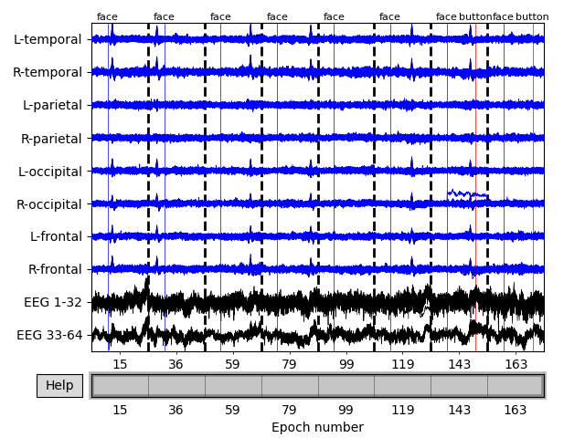
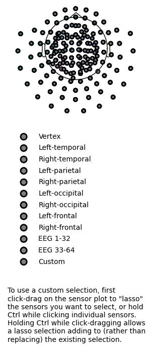
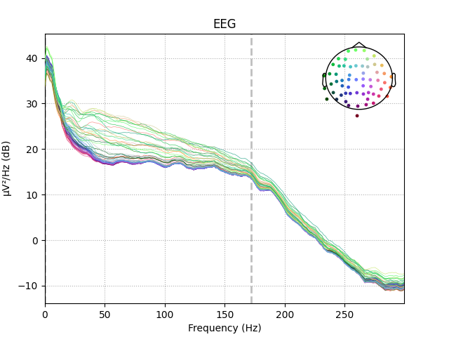
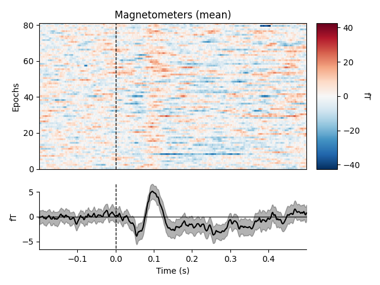
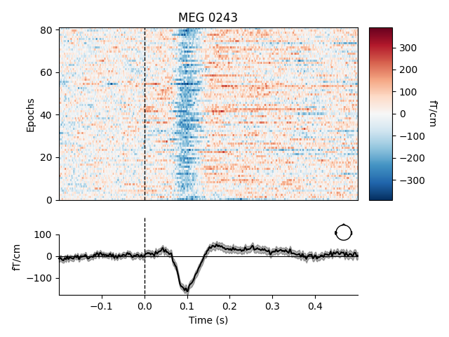
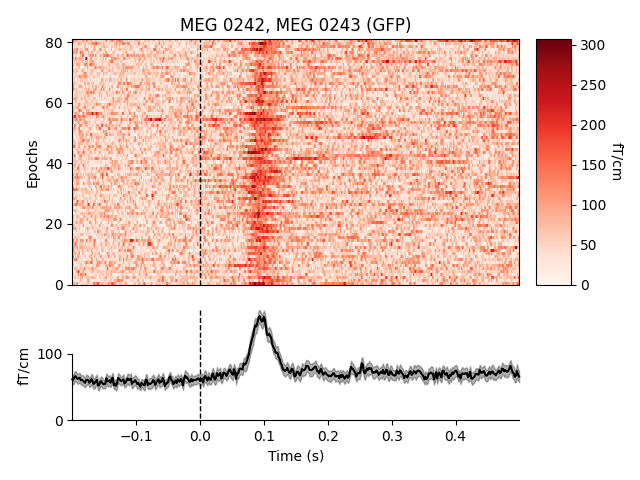
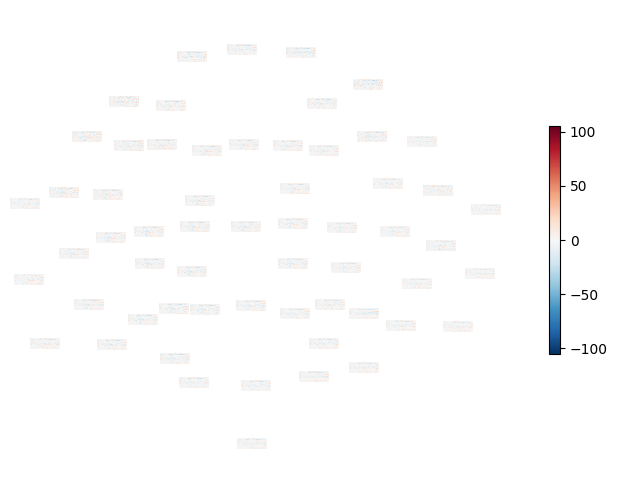

Note
Click here to download the full example code
Visualizing epoched data¶
This tutorial shows how to plot epoched data as time series, how to plot the
spectral density of epoched data, how to plot epochs as an imagemap, and how to
plot the sensor locations and projectors stored in Epochs
objects.
Page contents
We’ll start by importing the modules we need, loading the continuous (raw) sample data, and cropping it to save memory:
import os
import mne
sample_data_folder = mne.datasets.sample.data_path()
sample_data_raw_file = os.path.join(sample_data_folder, 'MEG', 'sample',
'sample_audvis_raw.fif')
raw = mne.io.read_raw_fif(sample_data_raw_file, verbose=False).crop(tmax=120)
To create the Epochs data structure, we’ll extract the event
IDs stored in the stim channel, map those integer event IDs to more
descriptive condition labels using an event dictionary, and pass those to the
Epochs constructor, along with the Raw data
and the desired temporal limits of our epochs, tmin and tmax (for a
detailed explanation of these steps, see The Epochs data structure: discontinuous data).
events = mne.find_events(raw, stim_channel='STI 014')
event_dict = {'auditory/left': 1, 'auditory/right': 2, 'visual/left': 3,
'visual/right': 4, 'face': 5, 'button': 32}
epochs = mne.Epochs(raw, events, tmin=-0.2, tmax=0.5, event_id=event_dict,
preload=True)
del raw
Out:
176 events found
Event IDs: [ 1 2 3 4 5 32]
Not setting metadata
Not setting metadata
176 matching events found
Setting baseline interval to [-0.19979521315838786, 0.0] sec
Applying baseline correction (mode: mean)
Created an SSP operator (subspace dimension = 3)
3 projection items activated
Loading data for 176 events and 421 original time points ...
1 bad epochs dropped
Plotting Epochs as time series¶
To visualize epoched data as time series (one time series per channel), the
mne.Epochs.plot method is available. It creates an interactive window
where you can scroll through epochs and channels, enable/disable any
unapplied SSP projectors to see how they affect the
signal, and even manually mark bad channels (by clicking the channel name) or
bad epochs (by clicking the data) for later dropping. Channels marked “bad”
will be shown in light grey color and will be added to
epochs.info['bads']; epochs marked as bad will be indicated as 'USER'
in epochs.drop_log.
Here we’ll plot only the “catch” trials from the sample dataset, and pass in our events array so that the button press
responses also get marked (we’ll plot them in red, and plot the “face” events
defining time zero for each epoch in blue). We also need to pass in
our event_dict so that the plot method will know what
we mean by “button” — this is because subsetting the conditions by
calling epochs['face'] automatically purges the dropped entries from
epochs.event_id:
catch_trials_and_buttonpresses = mne.pick_events(events, include=[5, 32])
epochs['face'].plot(events=catch_trials_and_buttonpresses, event_id=event_dict,
event_color=dict(button='red', face='blue'))
To see all sensors at once, we can use butterfly mode and group by selection:
epochs['face'].plot(events=catch_trials_and_buttonpresses, event_id=event_dict,
event_color=dict(button='red', face='blue'),
group_by='selection', butterfly=True)
- 
- 
Plotting projectors from an Epochs object¶
In the plot above we can see heartbeat artifacts in the magnetometer channels, so before we continue let’s load ECG projectors from disk and apply them to the data:
ecg_proj_file = os.path.join(sample_data_folder, 'MEG', 'sample',
'sample_audvis_ecg-proj.fif')
ecg_projs = mne.read_proj(ecg_proj_file)
epochs.add_proj(ecg_projs)
epochs.apply_proj()
Out:
Read a total of 6 projection items:
ECG-planar-999--0.200-0.400-PCA-01 (1 x 203) idle
ECG-planar-999--0.200-0.400-PCA-02 (1 x 203) idle
ECG-axial-999--0.200-0.400-PCA-01 (1 x 102) idle
ECG-axial-999--0.200-0.400-PCA-02 (1 x 102) idle
ECG-eeg-999--0.200-0.400-PCA-01 (1 x 59) idle
ECG-eeg-999--0.200-0.400-PCA-02 (1 x 59) idle
6 projection items deactivated
Created an SSP operator (subspace dimension = 9)
9 projection items activated
SSP projectors applied...
Just as we saw in the Plotting projectors from Raw objects section, we can plot
the projectors present in an Epochs object using the same
plot_projs_topomap method. Since the original three
empty-room magnetometer projectors were inherited from the
Raw file, and we added two ECG projectors for each sensor
type, we should see nine projector topomaps:
epochs.plot_projs_topomap(vlim='joint')
Note that these field maps illustrate aspects of the signal that have
already been removed (because projectors in Raw data are
applied by default when epoching, and because we called
apply_proj after adding additional ECG projectors from
file). You can check this by examining the 'active' field of the
projectors:
print(all(proj['active'] for proj in epochs.info['projs']))
Out:
True
Plotting sensor locations¶
Just like Raw objects, Epochs objects
keep track of sensor locations, which can be visualized with the
plot_sensors method:
epochs.plot_sensors(kind='3d', ch_type='all')
epochs.plot_sensors(kind='topomap', ch_type='all')
- 
- 
Plotting the power spectrum of Epochs¶
Again, just like Raw objects, Epochs objects
have a plot_psd method for plotting the spectral
density of the data.
epochs['auditory'].plot_psd(picks='eeg')
Out:
Using multitaper spectrum estimation with 7 DPSS windows
It is also possible to plot spectral estimates across sensors as a scalp
topography, using plot_psd_topomap. The default parameters will
plot five frequency bands (δ, θ, α, β, γ), will compute power based on
magnetometer channels, and will plot the power estimates in decibels:
epochs['visual/right'].plot_psd_topomap()
Out:
Using multitaper spectrum estimation with 7 DPSS windows
Just like plot_projs_topomap,
plot_psd_topomap has a vlim='joint' option for fixing
the colorbar limits jointly across all subplots, to give a better sense of
the relative magnitude in each band. You can change which channel type is
used via the ch_type parameter, and if you want to view different
frequency bands than the defaults, the bands parameter takes a list of
tuples, with each tuple containing either a single frequency and a subplot
title, or lower/upper frequency limits and a subplot title:
Out:
Using multitaper spectrum estimation with 7 DPSS windows
If you prefer untransformed power estimates, you can pass dB=False. It is
also possible to normalize the power estimates by dividing by the total power
across all frequencies, by passing normalize=True. See the docstring of
plot_psd_topomap for details.
Plotting Epochs as an image map¶
A convenient way to visualize many epochs simultaneously is to plot them as
an image map, with each row of pixels in the image representing a single
epoch, the horizontal axis representing time, and each pixel’s color
representing the signal value at that time sample for that epoch. Of course,
this requires either a separate image map for each channel, or some way of
combining information across channels. The latter is possible using the
plot_image method; the former can be achieved with the
plot_image method (one channel at a time) or with the
plot_topo_image method (all sensors at once).
By default, the image map generated by plot_image will be
accompanied by a scalebar indicating the range of the colormap, and a time
series showing the average signal across epochs and a bootstrapped 95%
confidence band around the mean. plot_image is a highly
customizable method with many parameters, including customization of the
auxiliary colorbar and averaged time series subplots. See the docstrings of
plot_image and mne.viz.plot_compare_evokeds (which is
used to plot the average time series) for full details. Here we’ll show the
mean across magnetometers for all epochs with an auditory stimulus:
epochs['auditory'].plot_image(picks='mag', combine='mean')
Out:
Not setting metadata
Not setting metadata
81 matching events found
No baseline correction applied
0 projection items activated
0 bad epochs dropped
combining channels using "mean"
To plot image maps for individual sensors or a small group of sensors, use
the picks parameter. Passing combine=None (the default) will yield
separate plots for each sensor in picks; passing combine='gfp' will
plot the global field power (useful for combining sensors that respond with
opposite polarity).
- 
- 
Out:
Not setting metadata
Not setting metadata
81 matching events found
No baseline correction applied
0 projection items activated
0 bad epochs dropped
Not setting metadata
Not setting metadata
81 matching events found
No baseline correction applied
0 projection items activated
0 bad epochs dropped
Not setting metadata
Not setting metadata
81 matching events found
No baseline correction applied
0 projection items activated
0 bad epochs dropped
combining channels using "gfp"
To plot an image map for all sensors, use
plot_topo_image, which is optimized for plotting a large
number of image maps simultaneously, and (in interactive sessions) allows you
to click on each small image map to pop open a separate figure with the
full-sized image plot (as if you had called plot_image on
just that sensor). At the small scale shown in this tutorial it’s hard to see
much useful detail in these plots; it’s often best when plotting
interactively to maximize the topo image plots to fullscreen. The default is
a figure with black background, so here we specify a white background and
black foreground text. By default plot_topo_image will
show magnetometers and gradiometers on the same plot (and hence not show a
colorbar, since the sensors are on different scales) so we’ll also pass a
Layout restricting each plot to one channel type.
First, however, we’ll also drop any epochs that have unusually high signal
levels, because they can cause the colormap limits to be too extreme and
therefore mask smaller signal fluctuations of interest.
reject_criteria = dict(mag=3000e-15, # 3000 fT
grad=3000e-13, # 3000 fT/cm
eeg=150e-6) # 150 µV
epochs.drop_bad(reject=reject_criteria)
for ch_type, title in dict(mag='Magnetometers', grad='Gradiometers').items():
layout = mne.channels.find_layout(epochs.info, ch_type=ch_type)
epochs['auditory/left'].plot_topo_image(layout=layout, fig_facecolor='w',
font_color='k', title=title)
- 

Out:
Rejecting epoch based on EEG : ['EEG 001', 'EEG 002', 'EEG 003', 'EEG 004', 'EEG 005', 'EEG 006', 'EEG 007', 'EEG 015', 'EEG 016', 'EEG 023', 'EEG 039', 'EEG 041', 'EEG 044', 'EEG 045', 'EEG 046', 'EEG 047', 'EEG 048', 'EEG 049', 'EEG 050', 'EEG 051', 'EEG 052', 'EEG 054', 'EEG 055', 'EEG 056', 'EEG 057', 'EEG 058', 'EEG 059']
Rejecting epoch based on EEG : ['EEG 001', 'EEG 002', 'EEG 003', 'EEG 007', 'EEG 048', 'EEG 055']
Rejecting epoch based on EEG : ['EEG 007']
Rejecting epoch based on EEG : ['EEG 003', 'EEG 007']
Rejecting epoch based on MAG : ['MEG 1711']
Rejecting epoch based on EEG : ['EEG 001', 'EEG 002', 'EEG 003', 'EEG 007']
Rejecting epoch based on EEG : ['EEG 001', 'EEG 002', 'EEG 007']
Rejecting epoch based on MAG : ['MEG 1711']
8 bad epochs dropped
Removing projector <Projection | ECG-planar-999--0.200-0.400-PCA-01, active : True, n_channels : 203>
Removing projector <Projection | ECG-planar-999--0.200-0.400-PCA-02, active : True, n_channels : 203>
Removing projector <Projection | ECG-eeg-999--0.200-0.400-PCA-01, active : True, n_channels : 59>
Removing projector <Projection | ECG-eeg-999--0.200-0.400-PCA-02, active : True, n_channels : 59>
Removing projector <Projection | PCA-v1, active : True, n_channels : 102>
Removing projector <Projection | PCA-v2, active : True, n_channels : 102>
Removing projector <Projection | PCA-v3, active : True, n_channels : 102>
Removing projector <Projection | ECG-axial-999--0.200-0.400-PCA-01, active : True, n_channels : 102>
Removing projector <Projection | ECG-axial-999--0.200-0.400-PCA-02, active : True, n_channels : 102>
Removing projector <Projection | ECG-eeg-999--0.200-0.400-PCA-01, active : True, n_channels : 59>
Removing projector <Projection | ECG-eeg-999--0.200-0.400-PCA-02, active : True, n_channels : 59>
To plot image maps for all EEG sensors, pass an EEG layout as the layout
parameter of plot_topo_image. Note also here the use of
the sigma parameter, which smooths each image map along the vertical
dimension (across epochs) which can make it easier to see patterns across the
small image maps (by smearing noisy epochs onto their neighbors, while
reinforcing parts of the image where adjacent epochs are similar). However,
sigma can also disguise epochs that have persistent extreme values and
maybe should have been excluded, so it should be used with caution.
Out:
Removing projector <Projection | PCA-v1, active : True, n_channels : 102>
Removing projector <Projection | PCA-v2, active : True, n_channels : 102>
Removing projector <Projection | PCA-v3, active : True, n_channels : 102>
Removing projector <Projection | ECG-planar-999--0.200-0.400-PCA-01, active : True, n_channels : 203>
Removing projector <Projection | ECG-planar-999--0.200-0.400-PCA-02, active : True, n_channels : 203>
Removing projector <Projection | ECG-axial-999--0.200-0.400-PCA-01, active : True, n_channels : 102>
Removing projector <Projection | ECG-axial-999--0.200-0.400-PCA-02, active : True, n_channels : 102>
Total running time of the script: ( 0 minutes 35.451 seconds)
Estimated memory usage: 193 MB